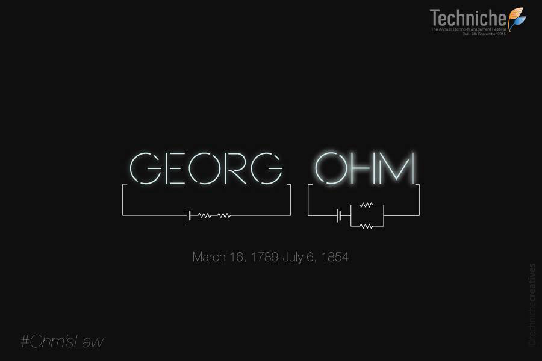
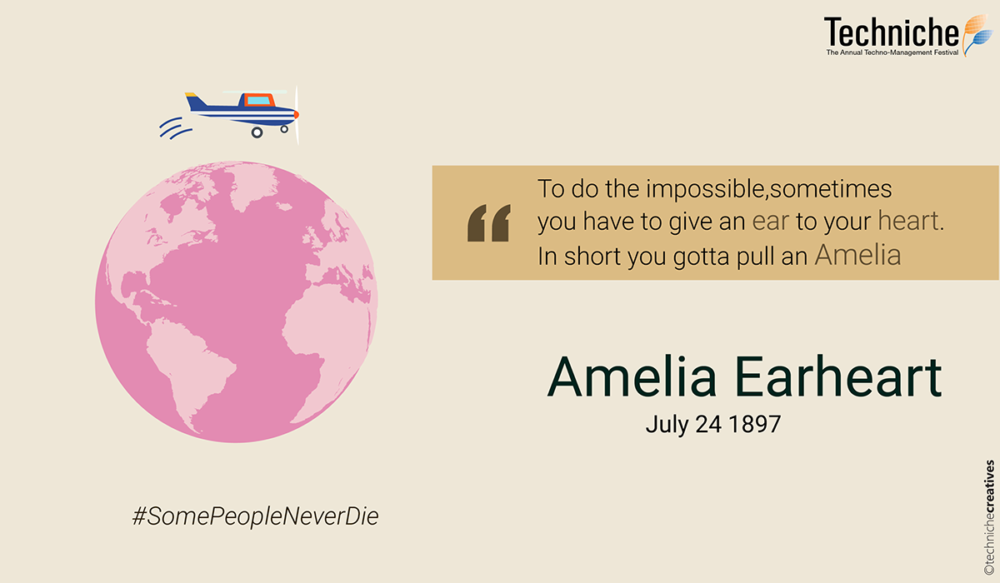
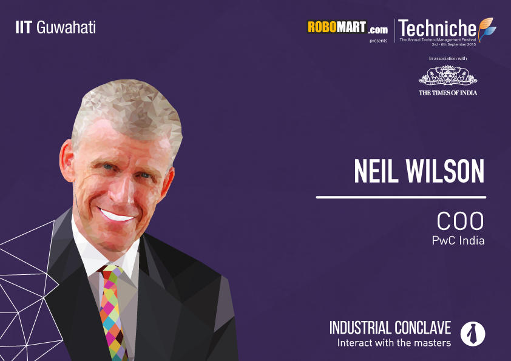
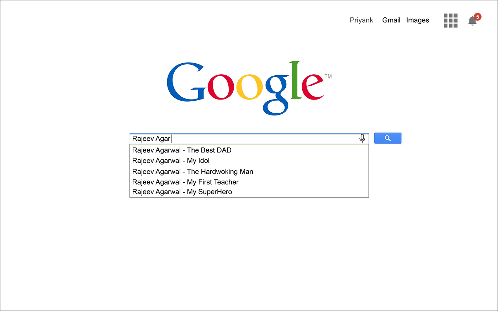

Posters
Role: Visual Designer
I was involved in the Creatives teams of the cultural and technical festivals of IIT Guwahati during my freshman years, and as a result, was involved in the making of some creative posters released from the social media accounts of the fests.
1. Georg Ohm's Birth Anniversary
The first poster I made that got published on the facebook page of the technical fest was for Georg Ohm's 226th birth anniversary. Ohm was famous for Ohm's Law, and I decided to show the Ohm's Law being applied on a circuit in the shape of his name.
It was my first time experimenting with the Adobe CC Suite and digital compositions. The poster came out quite clean, and was appreciated.

2. Amelia Earheart's birth anniversary
Similar to the Georg Ohm's Poster, a poster was scheduled to be released for the birth anniversary of Amelia Earheart, the first female aviator to have crossed the Atlantic Ocean.
This time, I chose to play with her name, and to create a quote out of it. Also, since it had a very feministic significance, I chose warm, unsaturated colors.

3. Low Poly Portrait
The introduction posters for the personalities coming for Industrial Conclave, Techniche'16 were planned to use low poly portraits of the personalities.
I was tasked to make a low poly portrait of Neil WIlson, COO, PWO India. I had no clue what a low poly portrait was, and the whole process took me over 12 hours, but the final outcome was oddly satisfying.

4. Father's Day
On the ocassion of Father's Day, I planned to surprise my Dad by making a poster for him. I made a Google Search Suggestions page with the suggestions showing what I felt about him.
This was my first encounter with the Chrome Inspector Panel, and I ripped off the fonts and colors used on the Google Landing page, and made almost everything vector. My Dad was elated on seeing the poster, and it also proved that I was learning something, for the very least.

Back to PortfolioLet's Talk!